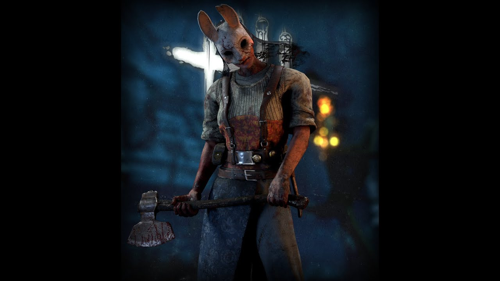
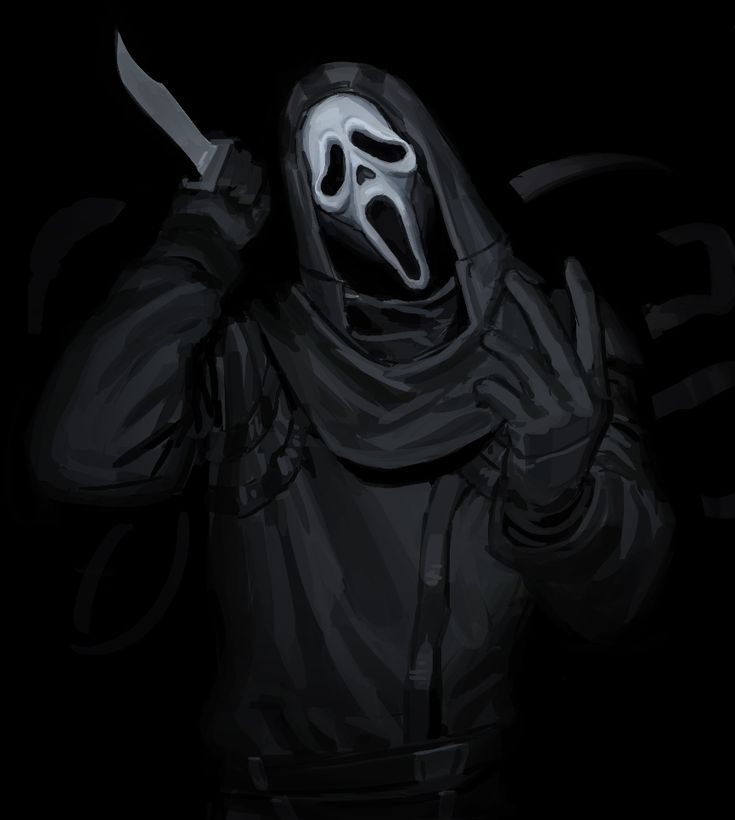
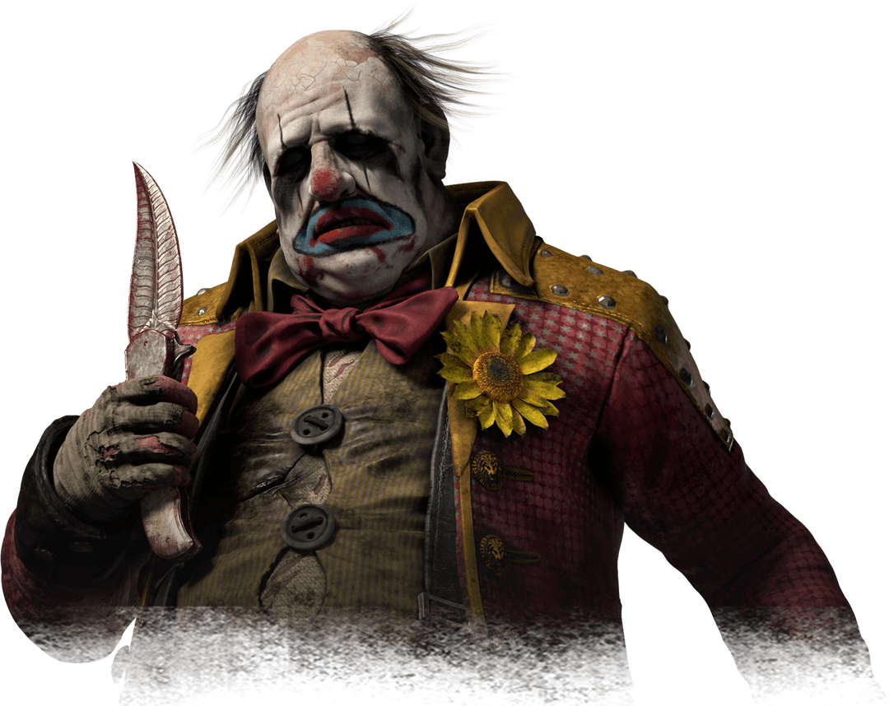

Добро пожаловать в Туман. Здесь собрана информация о некоторых самых известных маньяках Dead by Daylight, их способностях, уникальных перках и истории.
Каждый маньяк предлагает собственный стиль игры, уникальную способность и набор из трёх персональных перков.

Терпеливая охотница, способная угрожать выжившим даже на расстоянии.

Скрытный маньяк, который предпочитает наблюдать прежде чем атаковать.

Контролирует пространство с помощью своих особых составов.
Охотница — маньяк средней сложности, который специализируется на дальних атаках. Её основная способность позволяет использовать метательные топоры и пополнять их запас у шкафчиков.
В начале испытания Охотница получает пять охотничьих топоров. Их можно метать, а запас пополнять у шкафчиков. Главная особенность персонажа — возможность оказывать давление на выживших на значительном расстоянии.
При входе в состояние Bloodlust Охотница теряет Радиус Террора и красный свет, что затрудняет предсказание её действий во время погони.
Позволяет видеть ауру выживших, вошедших в подвал, когда Охотница находится на расстоянии от него.
Создаёт проклятый тотем. Получение жетонов за повешенных выживших постепенно усложняет проверки навыков.
Анна потеряла мать во время охоты и постепенно исчезла в северных лесах. Со временем она практически потеряла связь с прежней жизнью и стала известна местным жителям как Охотница.
Её история связана с Красным лесом, одиночеством и стремлением обрести семью. Именно эта трагическая история постепенно привела её к Туману.
Ghost Face — скрытный маньяк, который специализируется на наблюдении и преследовании отдельных выживших. Его сила позволяет становиться необнаруживаемым и помечать жертв.
Ghost Face может скрывать своё присутствие, теряя Радиус Террора и красный свет. В этом состоянии он может наблюдать за выжившими и помечать их. При успешном использовании способности помеченный выживший становится особенно уязвим.
После быстрого преодоления окна или доски Ghost Face может ненадолго увидеть ауру выжившего.
После поднятия выжившего генераторы, которые в этот момент не ремонтируются, блокируются Сущностью и подсвечиваются.
Позволяет получать жетоны при повешении одержимости. Жетоны уменьшают Радиус Террора во время погони.
Ghost Face связан с образом таинственного убийцы, который долгое время оставался неизвестным для полиции. Его прошлое окружено тайнами, а основой его поведения является скрытность и наблюдение.
В материалах Dead by Daylight его история связана с событиями Roseville Murders и таинственным преступником, который следил за своими жертвами.
Клоун использует свои особые составы для контроля пространства и сокращения продолжительности погонь.
Клоун начинает испытание с пятью бутылками своих составов. Фиолетовый состав создаёт облако, которое мешает выжившим и замедляет их. Жёлтый состав действует иначе, предоставляя ускорение тем, кто проходит через его облако.
Клоун быстрее преодолевает окна. После этого место преодоления временно блокируется для выживших.
Выжившие получают значительное снижение скорости лечения, находясь в Радиусе Террора Клоуна.
После повешения выжившего Клоун получает возможность воздействовать на прогресс генератора.
Кеннет Чейз работал в передвижном цирке, однако его тёмные наклонности постепенно взяли верх. Он создал образ Клоуна и начал использовать собственные химические составы.